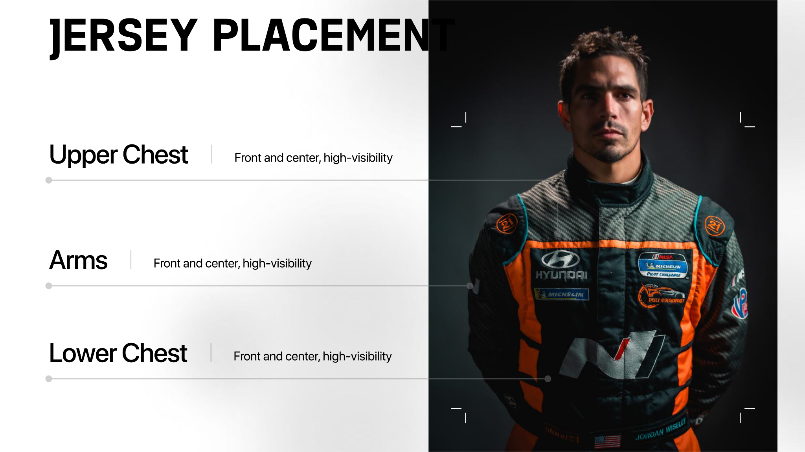

DRIVER DEVELOPMENT← Back to store
DRIVER DEVELOPMENT
Track Coaching Session
$499
A private SoCal N Motorsports coaching session focused on preparation, repeatable execution, and making the evidence from the car useful.
- Session objectives defined before the event
- Trackside or agreed-format coaching
- Data/video review when available
- Clear next-session priorities
Scheduling, location, coach availability, track access, and session format must be confirmed before service delivery.